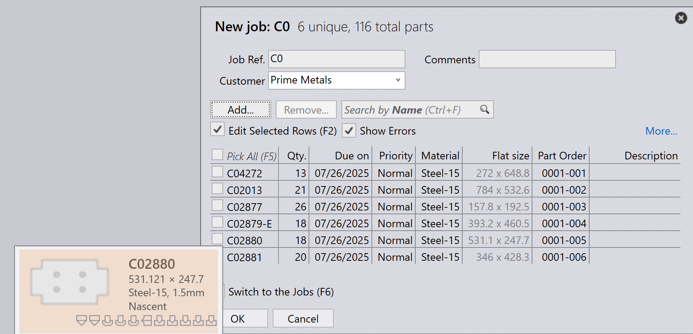
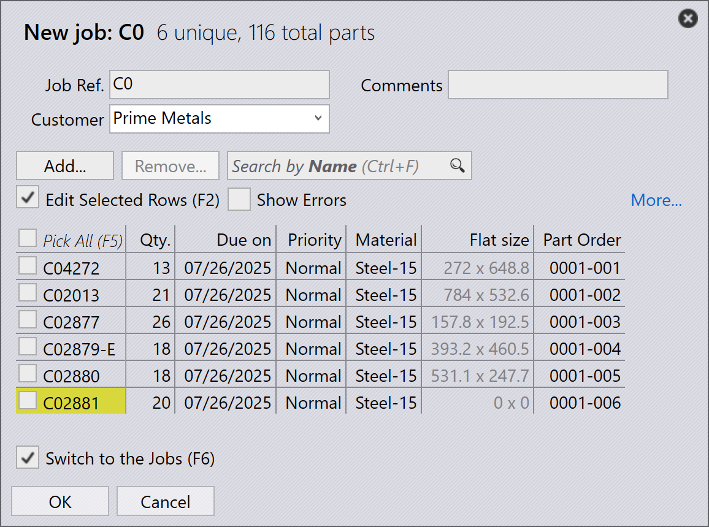

İşleri içe aktarma
CSV veya xlsx’den içe aktarma
İşleri yaygın metin formatlarında da içe aktarabilirsiniz
-
File → Open → İşleri İçe Aktar… seçeneğine tıklayın, Klasör Aç iletişim kutusu görünür.
C:\Program Files\Metamation\Praxis\Samples\Jobs\C0\C0.csvdosyasını seçin.
-
Tüm Parçalar csv konumunda veya arama klasörü dizinlerinde mevcutsa, yeni iş penceresi csv alanlarıyla eşleşen tüm parçaları listeleyerek görünür.
-
Eksik parçalar yok sayılır ve yeni iş penceresinde görünmez.
-
Başlangıçta Parça durumu Nascent’tir.

-
OK seçeneğine tıklayın, şimdi parçalar Parça Kütüphanesi’ne içe aktarılır. CAD doğrulaması, bükme ve kesme takımı örneği için takım, Pmonitor ekranında izlenebilir.

Eksik CAD dosyaları için ham sac parça oluştur
Bir elektronik tablo (.csv veya .xlsx) kullanarak işleri içe aktarırken, bazen sistemde mevcut olmayan CAD dosyalarına atıfta bulunan satırlarla karşılaşabilirsiniz.
-
Bunu ele almak için fabrika → Ayarlar → İş'a gidin, Veritabanı içe aktarma altında Eksik CAD dosyaları için ham sac parça oluştur seçeneğini etkinleştirin

Bu seçenek seçildiğinde:
-
İş içe aktarma sırasında herhangi bir satır için CAD dosyası eksikse, sistem otomatik olarak eksik CAD dosyasının yerine boş bir parça oluşturur.
-
yeni iş penceresinde, bu eksik parçalar ilişkili CAD dosyasının eksik olduğunu göstermek için sarı renkle görsel olarak vurgulanır.

-
Eksik parça, CSV’den eşlenen alanlarına (parça adı, malzeme, kalınlık, miktar, vb. gibi) sahip olmaya devam edecektir. Ancak, parça durumu Nascent olarak gösterilecektir, yani henüz gerçek geometrisi olmayan sadece boş bir yer tutucudur.

Bu, eksik CAD dosyaları nedeniyle hatasız iş içe aktarma işleminin devam edebilmesini sağlar — boş parçayı daha sonra doğru CAD dosyası mevcut olduğunda güncelleyebilir veya değiştirebilirsiniz.
Elektronik tabloda hata yoksa Yeni İş iletişim penceresini gösterme
fabrika → Ayarlar → İş → Veritabanı içe aktarma→ Elektronik tabloda hata yoksa Yeni İş iletişim penceresini gösterme
-
Bu onay kutusu seçildiğinde, sistem elektronik tabloda hata yoksa (eksik parça, eksik tarih veya geçersiz veri yoksa) Yeni İş iletişim kutusunu göstermeden otomatik olarak yeni işi oluşturur.
-
Bu onay kutusu temizlendiğinde, elektronik tabloda hata olmasa bile Yeni İş iletişim kutusu her zaman kullanıcı incelemesi ve onayı için görünür.
Prefer raw-material column over material + thickness
fabrika → Ayarlar → İş→Prefer Raw-Material column over Material + Thickness
-
Bu onay kutusu seçildiğinde, sistem elektronik tablonun Ham Malzeme sütununu kullanmasını bekler (örneğin, Steel-20). Bu, malzeme türü ve kalınlığın tek bir sütunda tek bir değerde birleştirilmesi gerektiği anlamına gelir.
-
Bu onay kutusu temizlendiğinde, sistem elektronik tablonun Malzeme ve Kalınlık için ayrı sütunlara sahip olmasını bekler (örneğin, Steel ve 2.00). Sistem bunları içe aktarma sırasında dahili olarak birleştirir.

CSV/XLSX kullanarak klasör izleme
-
fabrika → Ayarlar→ İzleme içinde 'Canlı Klasör’ü etkinleştir ve Alt klasörleri de izle seçeneklerini işaretleyin.
-
İzleme klasörü yolunu ayarlayın (UNC veya eşlenmiş sürücü).
-
Veritabanı içe aktarma içinde, 'Canlı Klasör’den elektronik tablo içe aktar seçeneğini işaretleyin.

-
Elektronik Tablo İçe Aktarma seçeneklerinden İşleri İçe Aktar… seçeneğini seçin.
-
C:\Program Files\Metamation\Praxis\Samples\Jobs\C0\C0.csvdosyasını kopyalayın ve İzleme Klasörü’ne yapıştırın. -
Sistem CSV’yi kontrol eder ve işi otomatik olarak oluşturmaya çalışır.
-
CAD dosyası eksikse, gerekli CAD verileri bulunamadığı için hiçbir iş oluşturulmaz.
CAD arama dizini ve özyinelemeli CAD arama - yapılandırılmamış
-
fabrika → Ayarlar → İş → Veritabanı içe aktarma içinde, CAD lookup directories ayarlanmamışsa ve Yinelemeli CAD araması kullan kullanılmıyorsa, sistem CAD dosyalarını otomatik olarak aramaz.
-
Eksik CAD dosyaları için ham sac parça oluştur onay kutusu seçiliyse, CAD dosyaları eksik olsa bile iş yine de oluşturulur.
-
Bu durumda, işteki tüm parçalar nascent (boş) parçalar olarak oluşturulur — yani CAD dosyaları bulunamadığı için geometrileri yoktur.

CAD arama dizini ve özyinelemeli CAD arama - yapılandırılmış
CAD arama dizinleri ayarı (C:\Program Files\Metamation\Praxis\Samples) olarak ayarlandığında ve Yinelemeli CAD araması kullan etkinleştirildiğinde fabrika → Ayarlar → İş → Veritabanı içe aktarma altında:
-
Sistem, belirtilen klasörü ve tüm alt klasörlerini elektronik tabloda belirtilen gerekli CAD dosyaları için otomatik olarak arar.
-
Eksik CAD dosyaları için ham sac parça oluştur de etkinleştirilmiştir, bu nedenle herhangi bir CAD dosyası hala bulunamazsa, sistem yer tutucu olarak boş bir parça oluşturur.